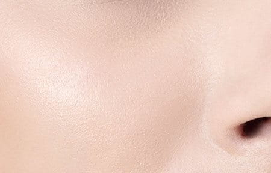
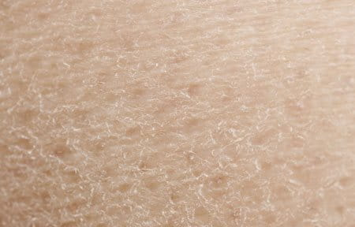
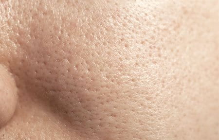
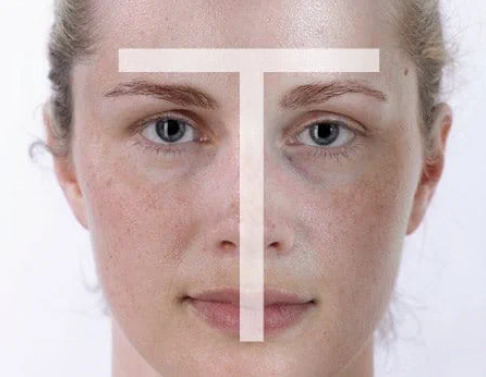

Transformando
Cuidado
Em Confiança.
Descubra seu tipo de pele e encontre produtos que combinam com suas necessidades e seu orçamento.
Descobrir meu tipo de peleBem-vinda à Venustra
Nosso objetivo é auxiliar você, mulher, na escolha de produtos cosméticos ao traçar o perfil geral de sua pele, além de traçar uma rotina de skincare contínua!
Tipos de pele
-

Pele normal
“Normal” é o termo usado para a pele balanceada. O termo científico é eudérmica: nem muito oleosa, nem muito seca.
-

Pele seca
Pele incapaz de reter água no volume necessário, geralmente por produzir poucos lipídios.
-

Pele oleosa
Alta produção de sebo. É mais propensa a cravos e a diversas formas de acne.
-

Pele mista
A zona T (testa, nariz e queixo) difere das bochechas.
Entre em contato
Possui alguma dúvida ou reclamação? Preencha os campos abaixo para que possamos dar suporte ao seu problema.